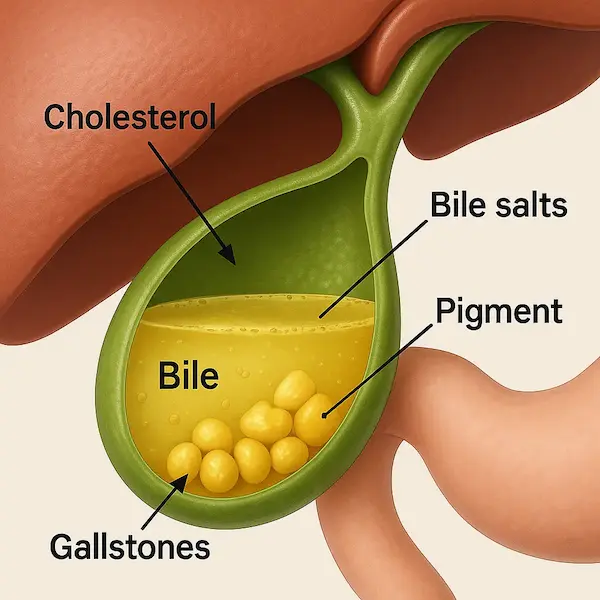
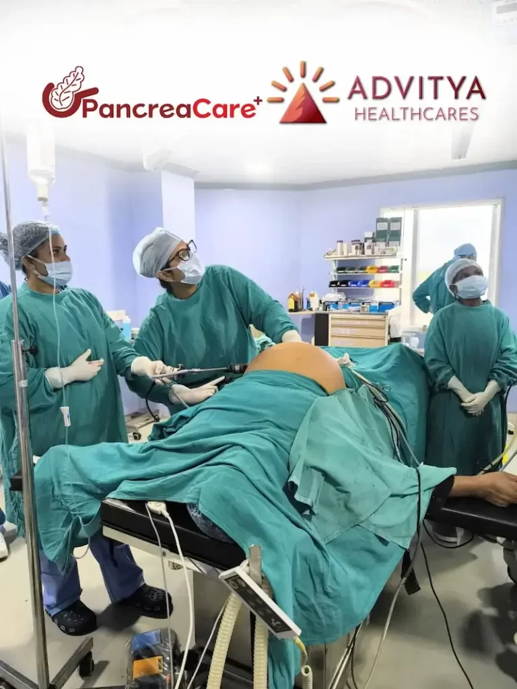

Imagine this: You have just enjoyed a hearty, delicious meal with your family. Perhaps it was a festive dinner or a wedding feast, rich with the spicy and oily flavours we love here in Jharkhand.
Introduction: The Silent Trouble in Your Abdomen
Imagine this: You have just enjoyed a hearty, delicious meal with your family. Perhaps it was a festive dinner or a wedding feast, rich with the spicy and oily flavours we love here in Jharkhand. But instead of feeling satisfied, you are suddenly struck by a sharp, gripping pain in your upper right abdomen. You might brush it off as “gas” or “acidity,” popping a generic pill and hoping it passes. But if this scene feels all too familiar, your body might be trying to tell you something more serious.
Gallbladder stones (cholelithiasis) are becoming increasingly common in cities like Ranchi and Bokaro in Jharkhand, mainly due to changing lifestyles and dietary habits. Yet, despite their prevalence, there is a cloud of confusion surrounding them. Many patients delay treatment due to fear, misinformation, or the hassle of travelling to metropolitan cities for surgery.
At PancreaCare by Advitya Healthcares, we believe that world-class treatment should be available right at your doorstep. Whether you are in Morabadi, Bariatu, or travelling from Bokaro, you do not need to suffer in silence. Let’s break down exactly what gallbladder stones are, why surgery is often necessary, and debunk the myths that might be holding you back from a pain-free life.
What Are Gallbladder Stones?
The gallbladder is a small, pear-shaped organ located just beneath your liver. Its main job is to store bile, a digestive fluid produced by the liver that helps break down fats. Sometimes, the substances in the bile—specifically cholesterol and bilirubin—harden and form pebble-like deposits. These are gallbladder stones.
They can range in size from a grain of sand to a golf ball. Some people develop just one large stone, while others may have hundreds of tiny ones.
Why do they form?
While the exact cause is not always clear, doctors agree that your risk increases if:
* Your bile contains too much cholesterol or bilirubin.
* Your gallbladder doesn’t empty correctly or often enough.
* You consume a diet high in fat and low in fibre.
Recognizing the Symptoms: When to See a Doctor
One of the trickiest aspects of gallstones is that many people have them without knowing it. These are called “silent stones.” However, when a stone blocks a bile duct, the symptoms can be sudden and severe.
Watch out for these warning signs:
* Sudden, intensifying pain: Usually in the upper right portion of your abdomen or the centre of your abdomen, just below the breastbone.
* Referred pain: Pain that radiates to your right shoulder or between your shoulder blades.
* Nausea and vomiting: Often accompany the pain.
* Digestive issues: Bloating, indigestion, and intolerance to fatty foods.

If you notice yellowing of your skin or eyes (jaundice) or have a high fever with chills, this constitutes a medical emergency. It suggests the stone has caused an infection or completely blocked the bile duct.
The Gold Standard Treatment: Laparoscopic Cholecystectomy
If your stones are causing symptoms, surgery is the only permanent cure. The medical term for gallbladder removal is Cholecystectomy.
In the past, this meant open surgery with a large incision and a long recovery. Today, at PancreaCare, we specialise in Laparoscopic Cholecystectomy (Keyhole Surgery).
How it works:
Instead of a large cut, the surgeon makes 3 to 4 tiny incisions (less than 1 cm) in the abdomen. A laparoscope (a thin tube with a camera) is inserted, allowing the surgeon to see inside your body on a high-definition monitor. The gallbladder is then carefully removed through one of the small incisions.
Benefits of Laparoscopic Surgery:
* Minimal Pain: Significantly less post-operative pain compared to open surgery.
* Quick Recovery: Most patients are discharged within 24 to 48 hours and can return to normal activities within a week.
* Cosmetic Advantage: The tiny scars fade over time and are barely visible.
* Safety: It is one of the most commonly performed and safest surgeries in the world when done by experts.
Busting Common Myths About Gallbladder Surgery
There is a lot of “advice” floating around in WhatsApp groups and neighbourhood chats in Ranchi and Bokaro. Let’s set the record straight with medical facts.
Myth 1: “I can flush out gallstones by drinking oil, apple juice, or herbal mixtures.”
> Fact: This is a dangerous myth. Gallstones are solid, hard deposits. Drinking oil or juices will not dissolve them. In fact, consuming large amounts of oil to “flush” the system can trigger a severe gallbladder attack or even pancreatitis (inflammation of the pancreas), which is life-threatening.
Myth 2: “Only the stones need to be removed, not the whole gallbladder.”
> Fact: Unlike kidney stones, we cannot simply remove gallstones and leave the organ. If we leave the gallbladder, the underlying issue (imbalanced bile) remains, and stones will almost certainly form again quickly. Removing the gallbladder is the only permanent cure.
Myth 3: “I won’t be able to digest food or eat normal meals after surgery.”
> Fact: Your liver produces bile, not the gallbladder. The gallbladder just stores it. After surgery, the liver continues to make bile, which drips continuously into your digestive system. You can absolutely eat a normal, healthy diet. You might need to limit very fatty foods for a few weeks while your body adjusts, but you will not have long-term digestive handicaps.
Myth 4: “Surgery is risky for older patients.”
> Fact: On the contrary, delaying surgery in older patients can be riskier. An untreated gallbladder can burst or cause severe infection, leading to complex emergency surgeries. Planned (elective) laparoscopic surgery is very safe for elderly patients when performed by specialists like the team at PancreaCare.
Myth 5: “Laser surgery is different from Laparoscopic surgery.”
> Fact: Many people in Jharkhand use the term “Laser” operation colloquially for Laparoscopic (Keyhole) surgery. True laser is rarely used for removing the gallbladder itself. The minimally invasive “keyhole” technique is the standard of care you are looking for.
Why Choose PancreaCare by Advitya Healthcares?
For years, families in Ranchi, Bokaro, and surrounding districts felt they had to travel to Delhi, Mumbai, or Vellore for complex stomach and liver surgeries. PancreaCare By Advitya Healthcares was born to change that narrative.
PancreaCare is not just a clinic; it is a centre of excellence dedicated to Gastrointestinal (GI) and Hepato-Pancreato-Biliary (HPB) surgeries.
Here is why we are the trusted choice in Jharkhand:
* Specialist Expertise: We are not just general surgeons; we are super-specialists in the digestive system. Our team handles everything from routine gallbladder stones to complex pancreatic cancers with metropolitan-level precision.
* Advanced Technology: We utilise the latest laparoscopic 4K imaging and surgical equipment, ensuring safer procedures and faster healing for our patients.
* Local Accessibility: We have brought expert care closer to you. With convenient locations in Ranchi (Morabadi and Bariatu Road) and partnerships in Khunti, you receive premium healthcare without the stress and cost of travelling to a metro city.
* Patient-Centric Approach: We understand that surgery can be scary. Our team is known for empathetic counselling, explaining every step of the procedure to the patient and their family in simple terms.
* Affordable Excellence: We believe high-quality healthcare should be accessible. We offer transparent pricing and work with various insurance providers to make your treatment stress-free.

Conclusion
Do not ignore that recurring pain in your abdomen. Living with gallbladder stones is like living with a ticking time bomb that could lead to infection or jaundice at any moment.
If you reside in Ranchi, Bokaro, Khunti, or anywhere in Jharkhand, expert help is just a phone call away. You do not have to live with pain or rely on unverified home remedies. Trust the specialists who understand your body best.
Take the Next Step for Your Health:
Are you or a loved one experiencing symptoms of gallbladder stones? Book a consultation with PancreaCare by Advitya Healthcares today.
* Visit us in Ranchi, Jharkhand & Bokaro
* Call us or WhatsApp for an appointment:
+91 9211221551
+91 9211221552
+91 9211221553
+91 9211221554
* Website: https://advityahealthcares.com/
PancreaCare by Advitya Healthcares – bringing world-class surgical care home to Jharkhand.
Have a question this article does not answer?
Send us your reports. A specialist reviews them before you travel, so the first visit begins with a plan rather than a repeat test.